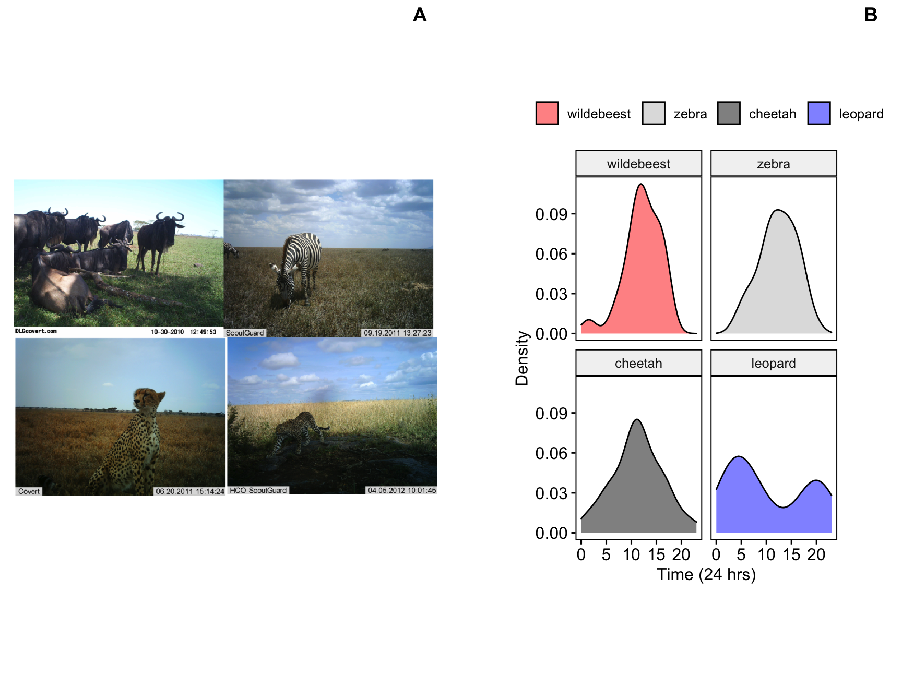
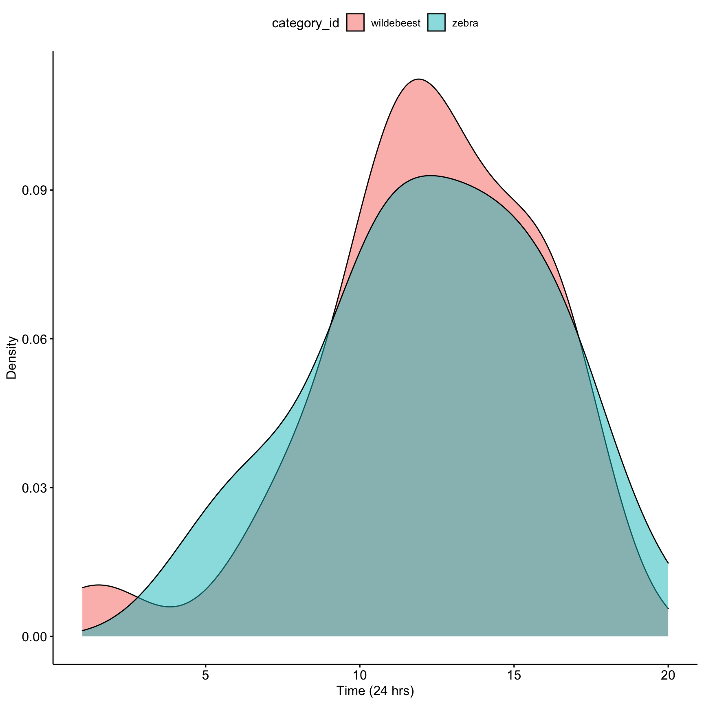
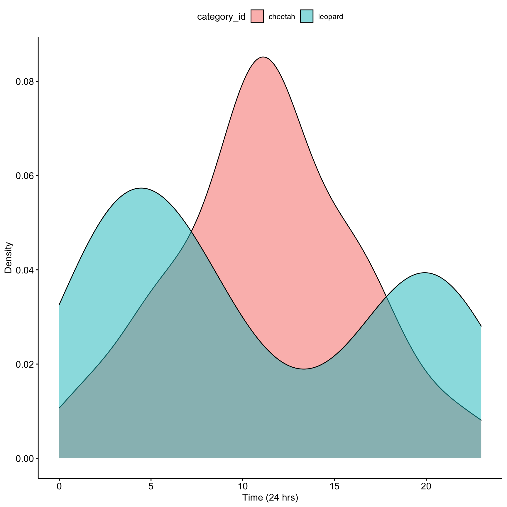
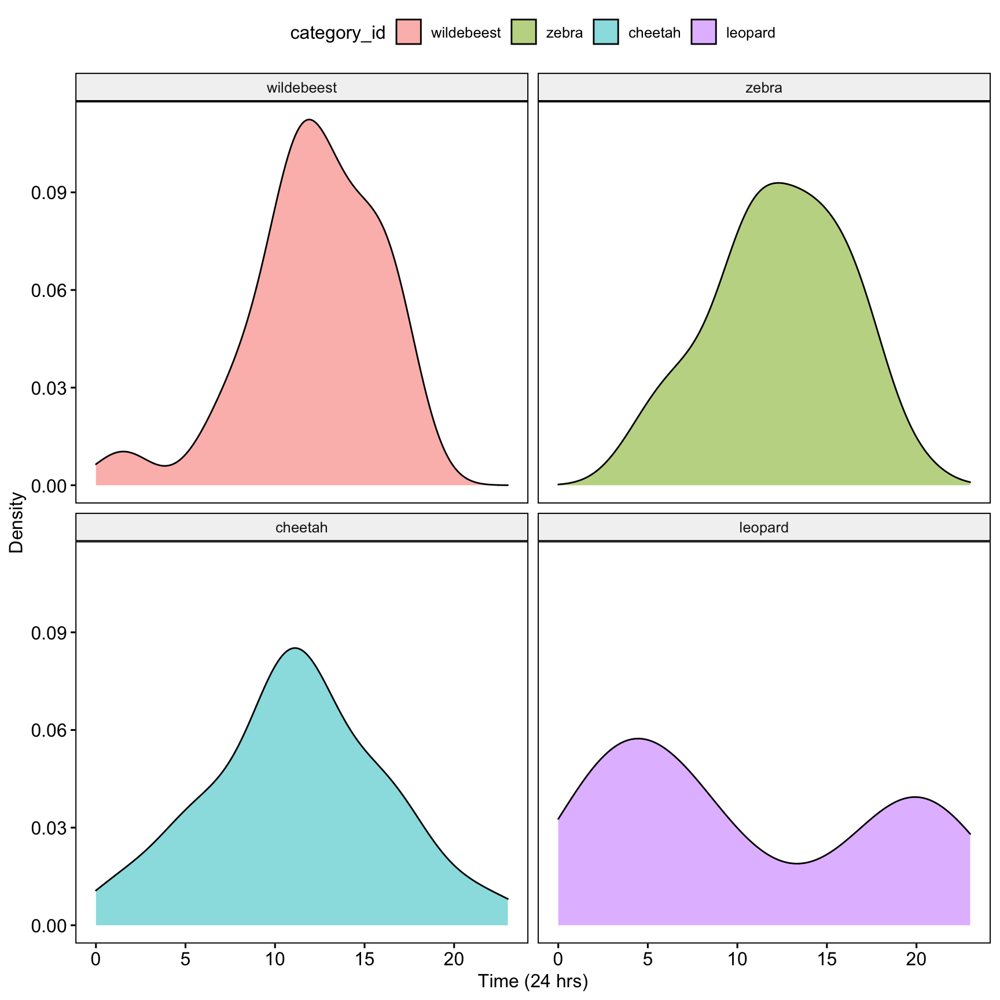

6 Lab 6. Analyzing camera trap data.

Background
In this lab we will use actual camera trap data collected in Serengeti National Park to investigate temporal niche partitioning. The camera trap data that we will use for this field lab comes from the ‘Snapshot Serengeti’ project (http://lila.science/datasets/snapshot-serengeti). The scientists set out out 225 cameras within a 1,125 km2 area. The cameras have been deployed continuously since 2010, and the researchers recruited citizen scientists to help with classifying images (https://www.zooniverse.org/projects/zooniverse/snapshot-serengeti).
Goals of the exercises
The main goal(s) of today’s lab are to:
1) Understand the types of behavioral data that scientists can collect from camera trap photos.
2) Become familiar with one of the ways scientists can compare differences in activity patterns.
3) Think about interspecific interactions of predator-prey and potential competitors in the Serengeti.
Getting started
First we need to load the relevant packages for our data analysis. Packages contain all the functions that are needed for data analysis.
6.1 Part 1: Collect Serengeti camera trap data
The original dataset includes over 2.65M sequences of camera trap images (totaling 7.1M images) from ten field seasons. As you can imagine that is a lot of data! For this lab we will focus on a subset of the data collected over the course of a few seasons.
We will be taking random subsets of the camera trap photos (the current default is 5 per season which you should change for your actual study), and we use ‘set.seed’ to make sure that our results are reproducible.
We can use the following code to query the database by season to see which photos are available. The available seasons are 1-4, 6-8,10,11. This function will return a table with all of the available camera trap photos for a particular season. With camera trap data often times photos will be taken in a sequence (e.g. if the animal is moving in front of the camera for a long time). The values in the table below include all photos in a sequence, but the code we use to download the photos only takes the first photo in a sequence. Therefore the sample sizes indicated in this table and the actual sample size may be different.
##
## aardvark aardwolf baboon batearedfox buffalo
## 143 88 348 315 1455
## bushbuck caracal cheetah civet dikdik
## 36 57 575 27 728
## eland elephant gazellegrants gazellethomsons genet
## 113 1687 4967 29705 28
## giraffe guineafowl hare hartebeest hippopotamus
## 1923 3217 327 2139 340
## honeybadger hyenaspotted hyenastriped impala jackal
## 42 2752 112 691 304
## koribustard leopard lionfemale lionmale mongoose
## 591 38 1519 665 290
## monkeyvervet ostrich otherbird porcupine reedbuck
## 64 211 2322 114 946
## reptiles rhinoceros rodents secretarybird serval
## 357 6 129 198 174
## topi warthog waterbuck wildcat wildebeest
## 428 2685 25 48 689
## zebra zorilla
## 5592 9For this lab you are going to choose two animals from the camera trap dataset. It could be a pair of animals that are predator and prey or two potential competitors. Once you decide on the two animals you want to compare you will make some predictions about how you think they will differ in their activity patterns.
Now we will use another function to download the camera trap photos and save them locally to our computer. You can change the season by changing the values for season (remember the available seasons are 1-4, 6-8,10,11). You can change the focal animal by changing the ‘AnimalID’; make sure that the spelling and case is exactly the same as in the table above. You can change the number of photos per season that you download (the default is 5). When ‘create.dir’ is true this will create a folder in your current working directory. For this example the folder is called ‘CameraTrapPhotoszebra’. If create.dir=‘FALSE’ all the photos will be downloaded directly to your working directory. To find the directory type ‘getwd()’ into your R console.
CombinedAnimalDF <- CameraTrapDataAccess(urlpath= 'https://lilablobssc.blob.core.windows.net/snapshotserengeti-unzipped/',
season= list(1,2),AnimalID='zebra', NumPhotos= 5,create.dir=TRUE)Here we isolate only the columns from the dataframe that we need.
CombinedAnimalDF <- CombinedAnimalDF[,c("category_id","season","location","filename")]
head(CombinedAnimalDF)## category_id season location filename
## 1975 zebra S1 C03 CameraTrapPhotoszebra/zebra_S1_C03.JPG
## 4742 zebra S1 C06 CameraTrapPhotoszebra/zebra_S1_C06.JPG
## 292 zebra S1 B05 CameraTrapPhotoszebra/zebra_S1_B05.JPG
## 7513 zebra S1 D05 CameraTrapPhotoszebra/zebra_S1_D05.JPG
## 4582 zebra S1 C06 CameraTrapPhotoszebra/zebra_S1_C06.JPG
## 45467 zebra S2 E02 CameraTrapPhotoszebra/zebra_S2_E02.JPGThe function below will allow you to enter data and look through each photo included in the ‘CombinedAnimalDF’ spreadsheet and enter the time that the photo was taken. You can change option=‘Plot’ to option=‘Viewer’ to load the photos more quickly, but you will have to expand the photo to see the whole thing. The input file should be the dataframe created using the ‘CameraTrapDataAccess’ function. You can break out of the function at any time by typibg ‘break’. It will print out which row of the dataframe you were on when you stopped the function. If you would like to resume where you left off you must change ‘rowstart=1’ to the row number indicated, and change ‘dataframe.cont = FALSE’ to ‘dataframe.cont = TRUE’.
Here is the function to view photos and annotate data.
CombinedAnimalDF_TimeAdded <- CameraTrapDataCollection(inputfile = CombinedAnimalDF,
rowstart = 1, dataframe.cont = FALSE, option = "Viewer")Now you may want to save your datasheet locally
6.2 Part 2: Analyze your Serengeti camera trap data
First we load your data sheet with the times added. NOTE: Make sure that your updated datasheet has the exact same name as the file indicated below.
# You can read in your datasheet that you saved
CombinedDFTimes <- read.csv('CombinedAnimalDF_TimeAdded.csv')Then we can check the structure
Now we can make a density plot that will show the distribution of camera trap photos that were taken over 24-hours. We add the fill = ‘category_id’ so that we show different distributions for each animal.
ggdensity(data=CombinedDFTimes,x='Time',fill = 'category_id')+
xlab('Time (24 hrs)') +ylab('Density')
Question 1. What do you notice about the overlap of the two density curves? Does it look like there is temporal niche partitioning?
Now we can calculate an overlap coefficient which can be used to investigate potential competitive and interaction possibilities between species.The value ranges from ranges from 0 (no overlap) to 1 (complete overlap).
First we subset our data to focus on the first animal in our dataset
Then we subset our data to focus on the second animal in our dataset
Now we use the overlap function to calculate the overlap coefficient
## # Overlap
##
## 0.91Question 2. How do you interpret the overlap coefficient for your data?
6.3 Part 3: Focus on your partner’s Serengeti camera trap data
Now we will read in our partners data.
NOTE: Make sure that your updated datasheet has the exact same name as the file indicated below.
Let’s check the structure
## X category_id season image_id location Time
## 1 247918 cheetah S2 S2/R07/R07_R3/S2_R07_R3_IMAG0167 R07 15
## 2 326897 cheetah S3 S3/K11/K11_R11/S3_K11_R11_IMAG0155 K11 1
## 3 204936 cheetah S2 S2/J11/J11_R2/S2_J11_R2_IMAG1279 J11 6
## 4 364272 cheetah S3 S3/P10/P10_R11/S3_P10_R11_IMAG0031 P10 12
## 5 262070 cheetah S2 S2/U13/U13_R1/S2_U13_R1_PICT0091 U13 5
## 6 181602 cheetah S2 S2/H07/H07_R3/S2_H07_R3_PICT4675 H07 16Now we can make a density plot for our partner’s data.
ggdensity(data=CombinedPartnerDFTimes,x='Time',fill = 'category_id')+
xlab('Time (24 hrs)') +ylab('Density')
Question 3. What do you notice about the overlap of the two density curves for your partner’s data? Does it look like there is temporal niche partitioning?
Now we can calculate an overlap coefficient which can be used to investigate potential competitive and interaction possibilities between species.The value ranges from ranges from 0 (no overlap) to 1 (complete overlap).
First we subset our data to focus on the first animal in your partner’s data set
Then we subset our data to focus on the second animal in our dataset
Now we use the overlap function to calculate the overlap coefficient
## # Overlap
##
## 0.56Question 4. What is the overlap coefficient for your partner’s data? How do you interpret this?
6.4 Part 4. Investigating temporal niche partitioning in four different animals
First we combine both datasets
Then we plot the diel activity patterns for all four species
ggdensity(data=AllDataCombined,x='Time',fill = 'category_id',facet.by = 'category_id')+
xlab('Time (24 hrs)') +ylab('Density')
Question 5. Based on the activity patterns and your understanding of the Serengeti food web how do you interpret these results? Is there evidence of temporal niche partitioning among potential competitors? What about interactions between potential predators and prey?